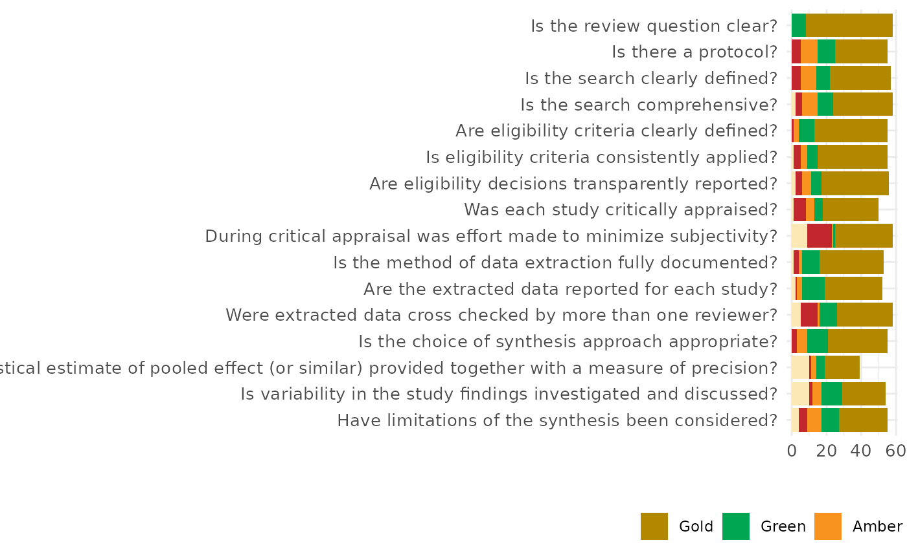

Plot a horizontal stacked bar chart for review assessments
plot_CEESTAT.RdThis function creates a horizontal stacked bar chart (like the one used in systematic review. It is designed to visualize categorical appraisal CEESTAT results (e.g., Gold, Green, Amber, Red, N/A) across multiple review criteria.
Usage
plot_CEESTAT(
df,
palette = c(Gold = "#b28800", Green = "#00a651", Amber = "#f7931e", Red = "#c1272d",
NA_ = "#fbe8b5")
)Examples
review_data <- data.frame(
Question = c(
"Is the review question clear?",
"Is there a protocol?",
"Is the search clearly defined?",
"Is the search comprehensive?",
"Are eligibility criteria clearly defined?",
"Is eligibility criteria consistently applied?",
"Are eligibility decisions transparently reported?",
"Was each study critically appraised?",
"During critical appraisal was effort made to minimize subjectivity?",
"Is the method of data extraction fully documented?",
"Are the extracted data reported for each study?",
"Were extracted data cross checked by more than one reviewer?",
"Is the choice of synthesis approach appropriate?",
"Is a statistical estimate of pooled effect (or similar) provided together with a measure of precision?",
"Is variability in the study findings investigated and discussed?",
"Have limitations of the synthesis been considered?"
),
Gold = c(50, 30, 35, 34, 42, 40, 39, 32, 33, 37, 33, 32, 34, 20, 25, 28),
Green = c(8, 10, 8, 9, 9, 6, 6, 5, 1, 10, 13, 10, 12, 5, 12, 10),
Amber = c(0, 10, 9, 9, 3, 4, 5, 5, 1, 2, 3, 1, 6, 3, 5, 8),
Red = c(0, 5, 5, 4, 1, 4, 4, 7, 14, 3, 1, 10, 3, 1, 2, 5),
NA_ = c(0, 0, 0, 2, 0, 1, 2, 1, 9, 1, 2, 5, 0, 10, 10, 4)
)
plot_CEESTAT(review_data)
